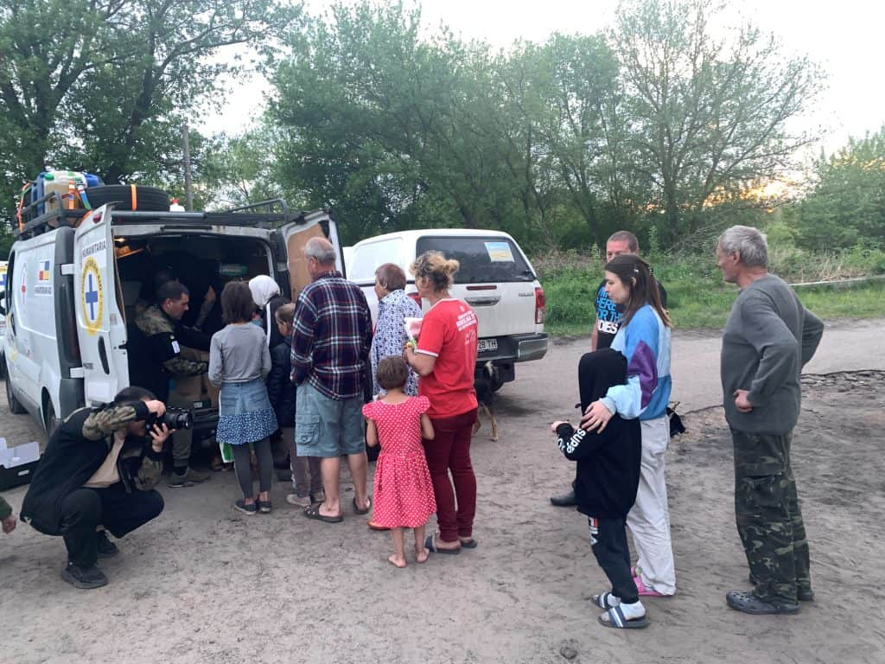
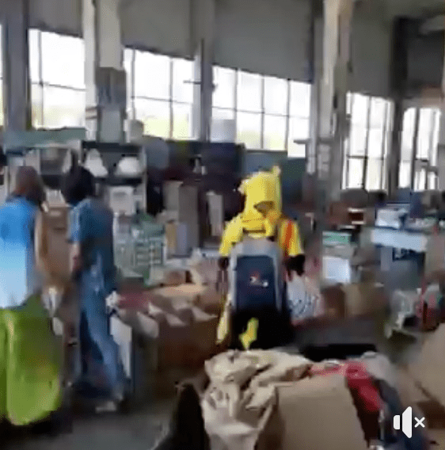
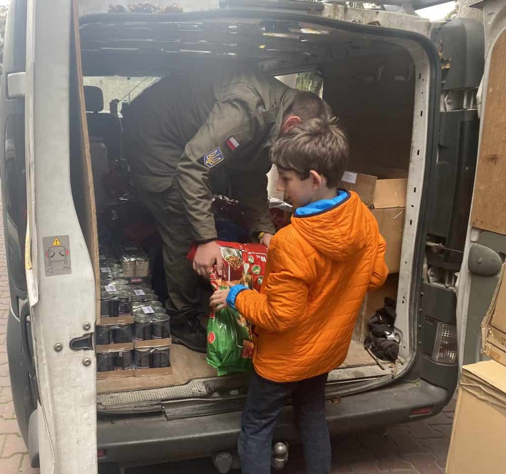
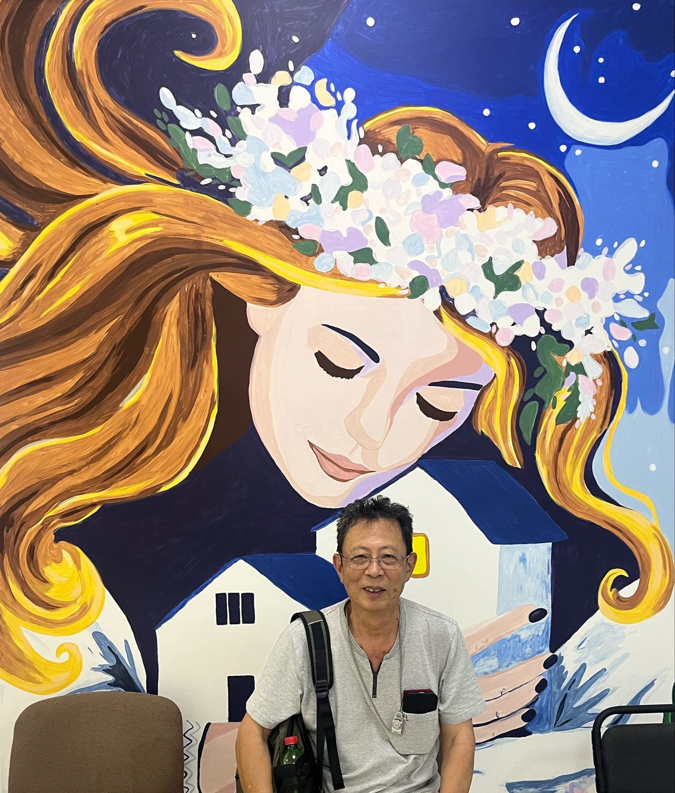
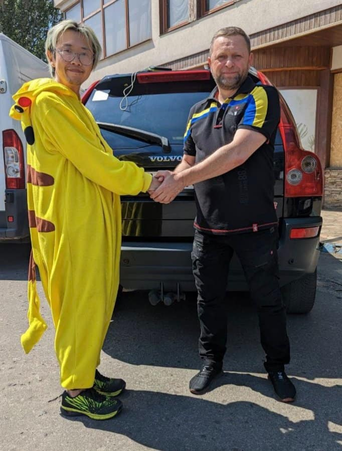
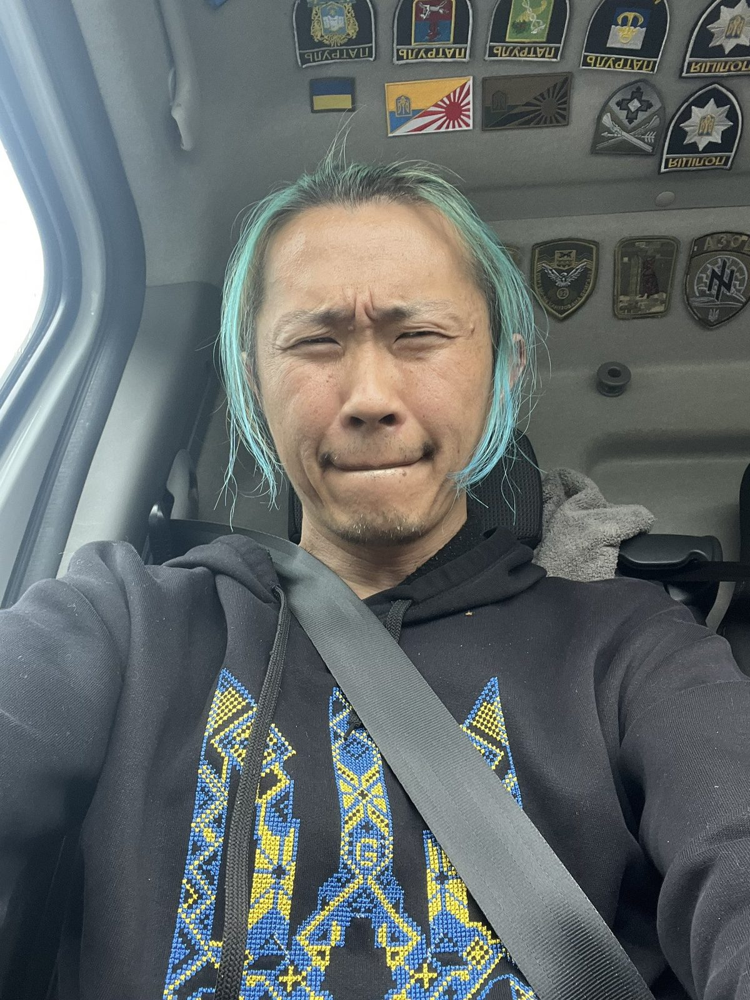

ホーム › 活動内容 › 民生への支援
支援物資の供給や住居の確保を支援し、ウクライナの人々の生活を支えています。現地の行政・救急隊と連携し「本当に必要な物」を届けることを大切にしています。支援キャラバンは100回を超えました。

JCIポーランドのメンバーと共にトラック3台による支援物資キャラバンを実施。リビウ、キーウ、ドニプロ、ブチャなど各地を歴訪し物資を配布しました。

ウクライナ各地の支援センターで、物資の仕分けや配送のボランティアを行いました。

JCIポーランドのメンバーと共に支援物資キャラバンを実施し、冬用の生活装備などを各地で配布しました。

ドニプロに障がい者優先の避難施設をウスミシュカ・ハウスの寄付金も利用して建設・共同運営。東部占領地域からの避難者を受け入れ、子供たちの知育・交流の場も整備しています。

カホウカダム決壊による水害を受け、ヘルソン市長・州知事からの公式な依頼を受けて人道支援活動を実施。決壊当日からポータブル発電機を配布し、パワーバンク100個・ポータブル電源10台を届けました。

ハリキウの行政機関と人道支援仲間からの要請を受け、被災地で支援を実施。ドニプロ水力発電所付近の被災住宅地域では、屋根や建具の修理など復旧支援も行いました。